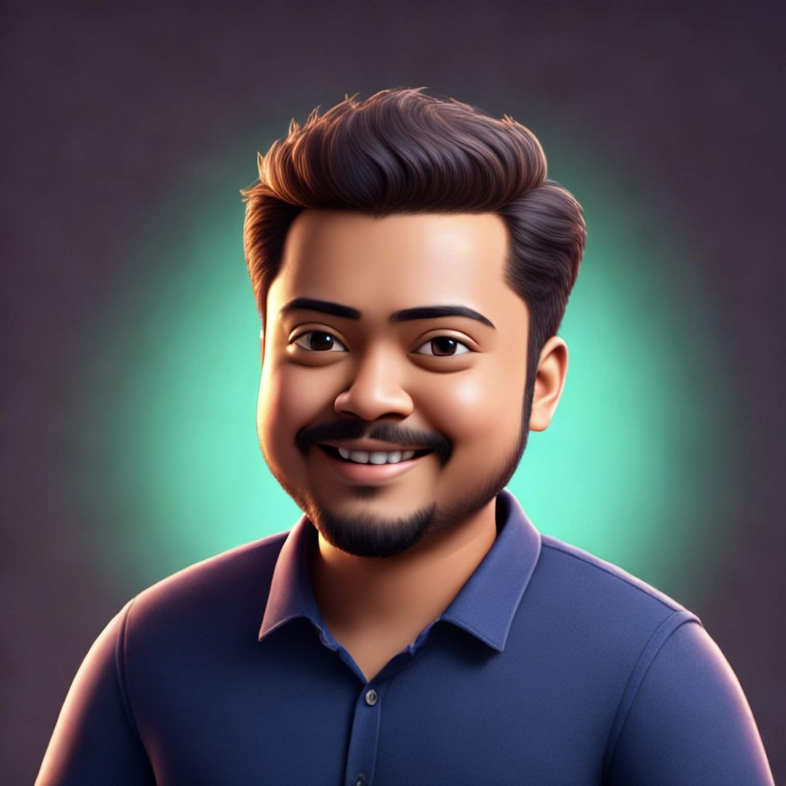

Engineering Manager • Architecting Intelligence into Production Systems
Engineering Manager with 14+ years of experience architecting intelligence into production systems. I specialize in building production-grade AI solutions that seamlessly integrate into business-critical workflows. My expertise spans from designing intelligent architectures to deploying scalable ML systems that deliver measurable business impact. I lead teams in transforming complex data into actionable intelligence, focusing on robust, maintainable systems that operate reliably at scale.
Production-grade intelligent system for real-time fraud detection. Architected end-to-end intelligence pipeline processing 50M+ transactions daily. Built adaptive ML models with automated retraining and ensemble decision-making. Achieved 99.8% accuracy while reducing false positives by 45%.
Enterprise-grade platform architecting intelligence into business operations. Built predictive analytics engine with automated decision-making capabilities. Designed scalable architecture serving 200+ internal applications with sub-100ms latency. Increased operational efficiency by 35%.
Production-grade computer vision intelligence for manufacturing quality control. Architected real-time defect detection system with 99.2% accuracy. Built edge-optimized models deployed across 50+ production lines. Integrated seamlessly with existing manufacturing workflows.
Enterprise MLOps framework for deploying production intelligence at scale. Architected automated ML lifecycle management with zero-downtime deployments. Built monitoring and governance systems for 100+ production models. Adopted by 15+ engineering teams across the organization.
Production-ready conversational AI architected for enterprise customer service. Built multi-modal intelligence supporting voice, text, and visual inputs. Deployed across 20+ customer touchpoints with 92% resolution rate. Handles 10M+ conversations monthly with human-like accuracy.
Production-grade forecasting intelligence for supply chain optimization. Architected multi-horizon prediction system with adaptive learning capabilities. Built automated anomaly detection and model recalibration. Improved forecast accuracy by 40% while reducing inventory costs by $25M annually.
Development and maintenance of server-side logic and databases for various internal and client-facing projects. This role involved a blend of backend development, scripting, and database management, with a focus on delivering clean, efficient, and well-documented code within a collaborative Agile environment.